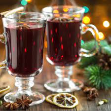

Gluhwein

Description
Just a nice way to spruce up some store-bought gluhwein. Any sweet,
full bodied red will work, too, if you bring your own mulling spices.
Ingredients
- Store-bought gluhwein or red wine & mulling spices
- 2-3Cinnamon sticks
- Cara cara oranges
- Nutmeg
- Allspice
Steps
- Pour the gluhwein into a stovepot and use low heat (a 3 out of 10) to bring the liquid to just barely bubbling.
- Slice oranges in the middle and arrange on top. Squeeze the juice into the pot from the ends of the cut oranges.
- Add the cinnamon sticks.
- Add the nutmeg and allspice to taste. For a 750ml bottle of gluhwein, we do a generous pinch of both. Stir.
Return to main page